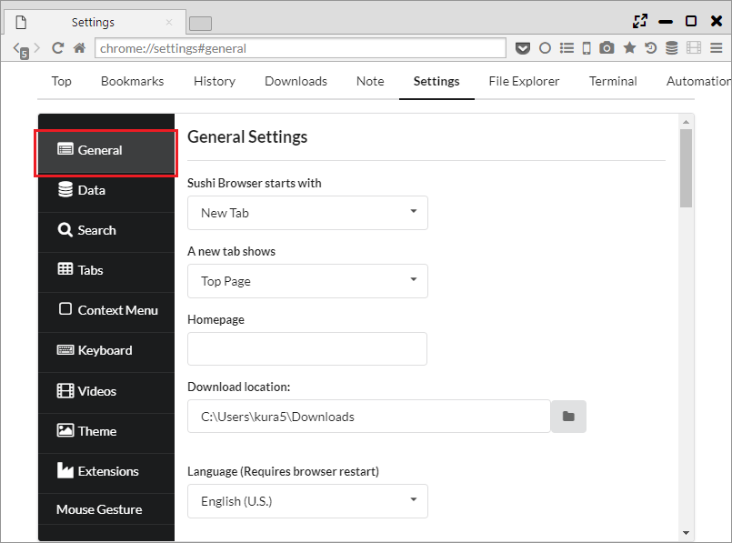

多彩な設定
「設定 > 一般」から基本的な設定と独自項目の設定が行えます。 
1. 設定
- 起動時に以下を表示
- 新しいタブ
- ホームページ
- ダウンロード保存先
- 言語 (ブラウザーの再起動が必要)
- Adobe Flash Player ・・・ Flash PlayerのON/OFFが設定できます。起動しない場合は、ここからFlash Playerをインストールしてください。
- Widevine
- Protection
- HTTPS Everywhere ・・・ http通信を可能な限りhttps通信に置き換える機能
- Tracking Protection ・・・ Google Analyticsのようなトラッキングサービスからの保護機能
- スクリプトをブロック（多くのサイトが機能しなくなります）・・・ Javascriptを無効にする機能
- フィンガープリンティングの保護（サイトが上手く機能しない場合があります）
- オートコンプリートのデータ (ブラウザーの再起動が必要)
- Order of AutoComplete ・・・ 「検索エンジンによるサジェスト→履歴」の順か、「履歴→検索エンジンによるサジェスト」の順かを設定
- Number of Suggestions ・・・ 「検索エンジンによるサジェスト」の表示数を設定
- Number of Histories ・・・ 「履歴」によるサジェストの表示数を設定
- Sort history in descending order of PV ・・・ 「履歴」によるサジェストの並び順をページビューの多い順にします（通常は日付が新しい順)
- ズーム (ブラウザーの再起動が必要) ・・・ ズーム率の変化量の設定
- Default Sidebar Position ・・・ メニューバー上のサイドバーアイコンをクリックした際のデフォルト出現位置の設定
- 新しいタブで開く (ブラウザーの再起動が必要)
- SideBar Link
- ToolBar Link
- AddressBar Link
- BookmarkBar Link
- Special Behavior
- Show Chrome Extension Icon on Toolbar(ブラウザーの再起動が必要) ・・・ Chrome拡張のアイコンをツールバーに表示するかバックグラウンドバーに表示するかの設定
- Show Fullscreen Button(ブラウザーの再起動が必要) ・・・ ウインドウ上部のフルスクリーンボタンを表示するか否かの設定
- Enable Mouse Gesture(ブラウザーの再起動が必要) ・・・ マウスジェスチャーのON/OFF設定
- Show Back/Forward Button's Badget (ブラウザーの再起動が必要) ・・・ 戻る、進むボタンの右下に出る数値のアイコンを表示するかの設定
- Show Focus Location Bar of Top Page ・・・ Top PageにFocus Location Barを表示するかの設定
- Enable Bottom Download List (ブラウザーの再起動が必要) ・・・ ダウンロード開始時に下端に表示されるダウンロードリストを表示するかの設定
- Enable behavior change when long press of middle mouse button (ブラウザーの再起動が必要) ・・・ マウスの中クリックを長押しした場合に、動作を変えるかの設定
- Enable horizontal position moving (When you triple left clicking) ・・・ トリプルクリックすると、クリックした位置に水平スクロールするかの設定
- Enable anything search (When you double pressing the shift key) (ブラウザーの再起動が必要) ・・・ シフトを2回押すと検索バーを表示するかの設定
- Send URL to external media player
- Concurrent Download(0 means no limit) ・・・ 並列で同時にダウンロードするファイル数の設定
- Max number of connections per item (Parallel Download) ・・・ 分割ダウンロードの分割数
- Custom Window Icon(ブラウザーの再起動が必要) ・・・ ウインドウアイコンの設定
- Sync Scroll Margin(ブラウザーの再起動が必要) ・・・ 同期スクロール時の次パネルのマージン設定
- Bind Window Frame Margin ・・・ Bind Windowのフレームに対するマージン
- Bind Window Title Margin ・・・ Bind Windowのタイトルバーに対するマージン